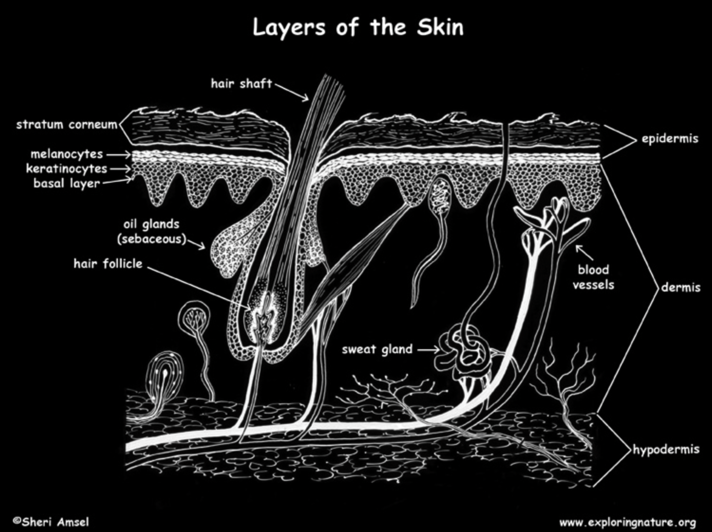

The integumentary system is the largest organ in the human body and forms a vital barrier between the internal environment and the outside world. It consists of the skin, hair, nails, and associated glands.
Key Functions of the Integumentary System
- Protection:
- Acts as a physical barrier preventing the entry of pathogens (bacteria, viruses, fungi) and other foreign substances.
- Protects underlying tissues and organs from mechanical damage, abrasion, and pressure.
- Provides protection against harmful ultraviolet (UV) radiation from the sun.
- Prevents dehydration by limiting water loss from the body.
- Temperature Regulation:
- Helps maintain a stable internal body temperature through mechanisms like sweating (for cooling) and insulation provided by subcutaneous fat and hair.
- Blood vessels in the skin can dilate (vasodilation) to release heat or constrict (vasoconstriction) to conserve heat.
- Sensation:
- Contains various sensory receptors that detect touch, pressure, pain, temperature, and vibration. This allows us to interact with our environment.
- Vitamin D Synthesis:
- Plays a crucial role in the production of Vitamin D, which is essential for calcium absorption and bone health. This process starts in the skin upon exposure to sunlight.
- Excretion:
- Small amounts of waste products, such as salts and urea, are excreted through sweat.
- Immunity:
- Special immune cells in the skin help to identify and fight off pathogens.
- Storage:
- The subcutaneous layer (hypodermis) stores fat, which provides insulation and energy reserves.
Anatomy of the Integumentary System
The skin is composed of three main layers:
- Epidermis:
- The outermost layer of the skin.
- Provides a waterproof and protective barrier.
- Contributes to skin tone through cells called melanocytes that produce melanin.
- Further divided into several layers (strata), with the outermost layer, the stratum corneum, consisting of dead, keratinized cells that are constantly shed and replaced.
- In thick skin (palms and soles), there are five layers: stratum basale, stratum spinosum, stratum granulosum, stratum lucidum, and stratum corneum. In other areas, the stratum lucidum is absent.
- Dermis:
- The layer beneath the epidermis.
- Contains connective tissue, providing strength and elasticity.
- Richly supplied with blood vessels, lymphatic vessels, and nerves.
- Contains hair follicles, sweat glands, and sebaceous (oil) glands.
- Divided into two layers:
- The papillary dermis - upper layer, containing papillae that interlock with the epidermis
- The reticular dermis - lower, thicker layer
- Hypodermis (Subcutaneous Tissue):
- The deepest layer, located beneath the dermis.
- Composed mainly of adipose (fat) tissue.
- Provides insulation, cushioning, and energy storage.
- Connects the skin to the underlying muscles and bones.

Skin Appendages
These are structures that extend from the epidermis into the dermis:
- Hair:
- Found all over the body except on the palms, soles, lips, and parts of the external genitalia.
- Functions include protection (e.g., scalp hair protects from sunlight and heat loss; eyelashes and nasal hair prevent entry of foreign particles), sensation, and sometimes social communication.
- Each hair consists of a shaft (the visible part) and a root (embedded in the hair follicle).
- Arrector pili muscles are small smooth muscles attached to hair follicles; their contraction causes "goosebumps."
- Hair and Nails
- Hair: Made of keratin; insulates and protects.
- Nails: Made of hardened keratin; protect fingertips and aid in grasping.
- Skin Glands
- Sweat Glands (Sudoriferous): Aid in cooling and waste removal.
- Sebaceous Glands: Produce sebum, an oily substance that lubricates skin and inhibits bacteria.
- Ceruminous Glands: Found in the ear canal; produce earwax.
Common Diseases and Disorders
- Acne: A common skin condition caused by blocked hair follicles, leading to oil, bacteria, and dead skin buildup.
- Dermatitis (Eczema): A general term for skin inflammation, often characterized by dry, itchy patches.
- Psoriasis: An autoimmune disorder causing scaly, itchy patches on the skin.
- Infections: Can be caused by bacteria (e.g., impetigo, cellulitis), viruses (e.g., herpes, shingles), or fungi (e.g., athlete's foot, fungal nail infections).
- Skin Cancer: The most common type of cancer, including basal cell carcinoma, squamous cell carcinoma, and melanoma.
- Burns: Tissue damage resulting from heat, chemicals, electricity, or radiation.
- Alopecia Areata: Hair loss in small patches, an autoimmune condition.
Written by Parthipan Kasiban